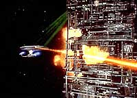
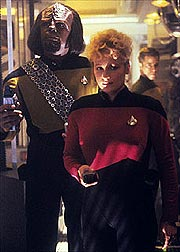
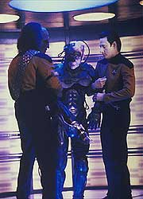
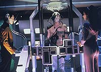
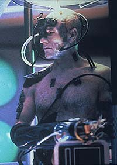

|
MANCHETE
DO EPISDIO
Riker
comanda a Enterprise e consegue
sustentar o ritmo da primeira parte
Episdio
anterior | Prximo
episdio
Sinopse:
Data Estelar: 44001.4.
A USS Enterprise, sob o comando de William Riker, tenta deter o cubo
Borg que avana em direo Terra. Uma tentativa de usar um
disparo do disco defletor falha, graas ao conhecimento adquirido
pelos aliengenas quando assimilaram o capito Jean-Luc Picard.
 A
Enterprise prepara os reparos para voltar a enfrentar o cubo Borg.
Uma frota de 40 naves tenta bloquear o avano da nave inimiga em
Wolf 359, mas massacrada pelos Borgs.
Somente quando a tripulao da Enterprise consegue resgatar
Locutus --forma assimilada de Picard-- e utiliz-lo como uma ponte
para introduzir uma instruo direcionada Coletividade que a
nave atacante detida.
 Data,
em contato com a Coletividade aps ser ligado poro ciberntica
de Locutus, implanta a ordem para que os Borgs voltem a se regenerar
--trocando em midos, ele ordena para que os inimigos tirem um
cochilo.
A sobrecarga faz com que a nave Borg se desintegre. Picard consegue
ser salvo, aps ter seus implantes Borgs retirados por intervenes
cirrgicas, e volta a assumir o comando da Enterprise.
Comentrios:
 A
continuao de "The Best of Both Worlds, Part I"
consegiu um feito difcil. Manter a qualidade exibida na primeira
parte. bem verdade que a metade inicial da histria ainda prende
mais a ateno do que sua concluso, mas no toa. Um
evento como a assimilao do capito Jean-Luc Picard um
atrativo que sustenta qualquer roteiro.
De qualquer forma, a segunda parte no ficou devendo. Alm de
conseguir resgatar Picard de forma extremamente convincente, o episdio
ainda deu o estrelato a Riker, que pde demonstrar sua habilidade
para ser capito.
"The Best of Both Worlds" fala sobre a dificuldade
de se superar um oponente que no s capaz de destruir seus
aliados, como convert-los a inimigos. A experincia no poderia
ser mais traumtica: ningum menos que o capito da nave mais
importante da Frota passa a ser um fonte quase inesgotvel de
conhecimento ttico para os Borgs.
 Foi
Guinan quem percebeu qual seria a dificuldade de vencer os Borgs
--seria necessrio se afastar de tudo o que Picard representava
para a tripulao da Enterprise, sua liderana, seu estilo de
comando, tudo isso agora fazia parte dos Borgs, e no mais poderia
servir aos interesses da Federao.
S quando Riker se d conta disso e resolve criar uma estratgia
totalmente desvinculada de Picard (e claramente marcada no roteiro,
por diversos "padres evasivos Riker-1" ou "manobras
Riker-2") que a Enterprise comea a reagir terrvel
investida Borg.
A soluo para o episdio --colocar os Borgs para dormir-- foi,
sem dvida, um golpe de mestre. E no foi por falta de pensar que
ela surgiu: Michael Piller, o roteirista do episdio, s bolou
essa sacada dois dias antes do incio da produo da quarta
temporada!
 Por
fim, podemos dizer que a segunda parte de "The Best of Both
Worlds" consolidou o episdio como um dos melhores de
Jornada nas Estrelas em todos os tempos, e elevou A Nova Gerao
a um novo patamar. Eventos apresentados aqui ainda tero repercusses
de curto e longo prazo --desde o segundo episdio do quarto ano a
ser exibido, "Family", at
o oitavo filme de cinema, "Jornada nas Estrelas -
Primeiro Contato".
E Locutus seria consagrado como um dos personagens recorrentes mais
queridos de Jornada. Alm do filme Primeiro Contato,
ele voltaria para uma ponta em "Emissary",
o piloto de Deep Space Nine.
Citaes:
Locutus - "Your
resistance is hopeless... Number One."
("Sua resistncia intil... Imediato.")
Guinan - "You're going to have to do something you don't
want to do. You have to let go of Picard."
("Voc vai ter que fazer algo que no quer. Voc vai ter que
esquecer o Picard.")
Troi - "How do you feel?"
("Como se sente?")
Picard - "Almost human... with just... a bit of a headache."
("Quase humano.. com apenas... um pouco de dor-de-cabea.")
Trivia:
 O personagem tenente Gleason
volta a aparecer na srie no episdio "Future
Imperfect", desta mesma temporada, porm como alferes
Gleason.
O personagem tenente Gleason
volta a aparecer na srie no episdio "Future
Imperfect", desta mesma temporada, porm como alferes
Gleason.
Este
episdio obteve indicaes ao prmio Emmy de melhores efeitos
especiais e de melhor direo de arte, e no ganhou. Porm
venceu na categoria de melhor edio de som e melhor mixagem
sonora.
Aps
este episdio, Riker voltou a ser comandante, sem nenhuma explicao
ao telespectador.
Em
um futuro episdio, "The
Drumhead" revelado que na batalha de Wolf 359 a
Frota Estelar perdeu 39 naves, com a morte de aproximadamente 11.000
tripulantes.
Por
motivos econmicos, a batalha de Wolf 359 no mostrada neste
episdio, apenas suas sequelas. Porm no episdio-piloto de Deep
Space Nine, "Emissary",
mostrada uma sequncia da mesma.
Embora
destroos de naves espaciais no possam ser encontradas por l,
Wolf 359 uma estrela que realmente existe. Fica no terceiro
sistema solar mais prximo da Terra, a "apenas" 7,6
anos-luz de distncia de ns, ou em termos trekkers, mais ou menos
a 36 horas em Dobra 9.
Ficha
tcnica:
Escrito por Michael Piller
Direo de Cliff Bole
Exibido em 24/09/1990
Produo: 075
Elenco:
Patrick Stewart como
Jean-Luc Picard
Jonathan Frakes como William Thomas Riker
Brent Spiner como Data
LeVar Burton como Geordi La Forge
Michael Dorn como Worf
Gates McFadden como Beverly Crusher
Marina Sirtis como Deanna Troi
Wil Wheaton como Wesley Crusher
Elenco convidado:
Elizabeth Dennehy
como tenente-comandante Shelby
George Murdock como almirante Hanson
Colm Meaney como O'Brien
Whoopi Goldberg como Guinan
Todd Merrill como tenente Gleason
Episdio anterior
| Prximo episdio
|